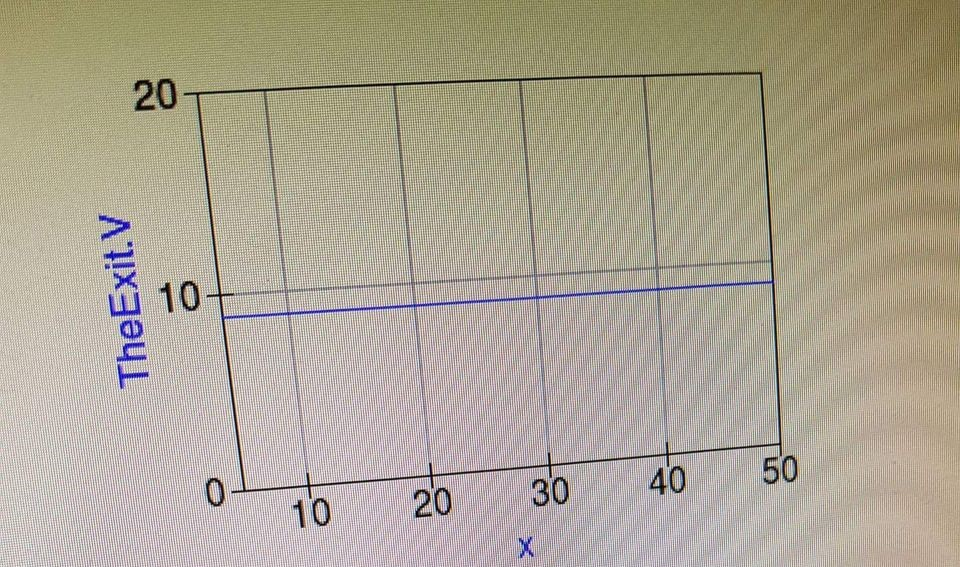

Chapter 1
Theoretical part
1.1 Circuit calculation
- the equivalent resistance,
- the total current from the power supply,
- the current through each resistor,
- the voltage drop across each resistor, and
- the power dissipated in each resistor.


1.2 Check modeling with gEDA
Start gschem with:
gschem my-schematic.sch
- Press
[I]to insert a part. The text input focus will be in theFilterfield. Start typing a part code and the tree in the main view will simmer down to show only matching parts. Some common parts are:resistor,capacitor,diodepnp,npngnd,vcc,vdd,12V-plusconnector
- Press
[OK]to select a part and then use the left mouse button to add parts of that kind. Press[Esc]when finished - The short text such as
D?next to the part is the reference designator, or refdes. It can be selected independent of the part and edited with[E]then[X]. The size and alignment of the text can be changed in that dialog too - Zoom with the mouse wheel and scroll around by holding down the middle mouse button
- Press
[N]to start laying a net in order to connect parts. Press[Esc]when finished laying a net - A net can be named by pressing
[A]twice when a net is selected. Nets with the same name are connected. UsingVccorGNDfor net names causes the net to be connected to those rails - Click or drag the left mouse button to select elements. Hold down the Shift key while doing this to add to the selection instead of replacing it

Figure 1.2 Image number 1 from screen
{kind=link}
1.3 Table creation
| Row | First Name | Last Name | |
|---|---|---|---|
| 1 | John | Carter | johncarter@mail.com |
| 2 | Peter | Parker | peterparker@mail.com |
| 3 | John | Rambo | johnrambo@mail.com |